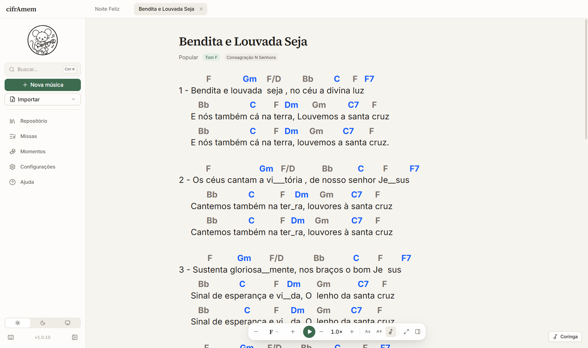
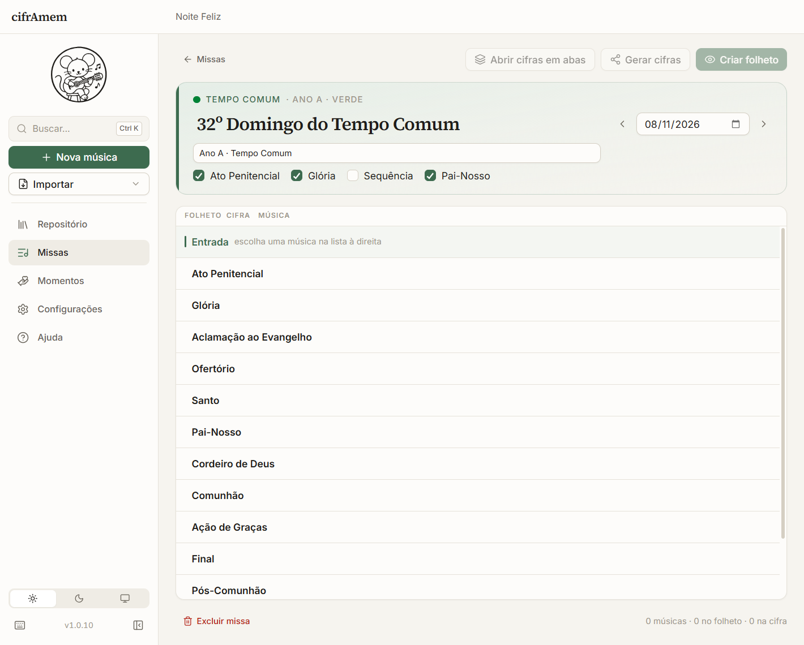

O repertório da sua pastoral, pronto para a missa
Cifras no tom certo, rolagem automática para tocar e folhetos de missa prontos para imprimir. Gratuito e sem cadastro.


Escolha a data, e a missa começa montada
O título, o tempo litúrgico, a cor do dia e as leituras vêm da data. Ato Penitencial, Glória, Sequência e Pai-Nosso já aparecem marcados conforme o dia, e você muda o que for diferente na sua comunidade.
Depois é só escolher as músicas de cada momento. Para outra data, duplique a missa e aproveite o que já escolheu.
Tocar sem virar página
Mude o tom, ajuste a rolagem automática e o tamanho da letra, ou use o modo apresentação.
Folheto em PDF
Veja o folheto antes de gerar, ajuste o texto e a aparência, e coloque o nome e a imagem da paróquia.
Cifras pelo WhatsApp
Gere um único arquivo com as cifras da missa. Ele abre no celular, no tablet ou no computador, mesmo sem internet.
Busca no repertório
Encontre por título, autor ou letra, e filtre por momento, tempo litúrgico, gênero e nota.
Momentos
Velório, adoração, animação e outras ocasiões têm seu próprio espaço, com folheto e cifras.
Suas músicas
O programa traz 19 músicas para começar. Importe suas cifras ou digite novas, que ficam guardadas no seu computador.
Como instalar
Leva poucos minutos, e o programa não pede conta nem senha.
- Baixe o instaladorUse o botão “Baixar para Windows” no alto da página.
- Abra o arquivo baixadoEle se chama cifrAmem-Setup.exe e costuma ficar na pasta Downloads.
- Siga o instaladorAo final, o cifrAmem ganha um atalho na área de trabalho.
Se o Windows mostrar “O Windows protegeu o computador”: clique em “Mais informações” e depois em “Executar assim mesmo”. O aviso aparece porque o instalador ainda não tem assinatura digital, um certificado pago.
Uso e direitos autorais
O cifrAmem é um programa de distribuição gratuita e sem fins lucrativos, criado para auxiliar os agentes das pastorais de música na preparação da liturgia. Seu criador não recebe nenhum valor pelo programa nem pelos materiais gerados com ele.
Letras, melodias e cifras pertencem a seus autores, compositores e editoras, que mantêm todos os direitos sobre as obras. Os folhetos e arquivos de cifras destinam-se apenas ao apoio às celebrações e não podem ser vendidos. Cabe a cada comunidade observar as autorizações exigidas para o uso das obras.
As músicas que você importa ou digita são de sua responsabilidade. Letras, melodias e cifras costumam ser protegidas por direitos autorais, e cada site tem seus próprios termos de uso. Antes de importar, verifique se você pode usá-las. O cifrAmem não fornece essas obras nem autoriza o seu uso.